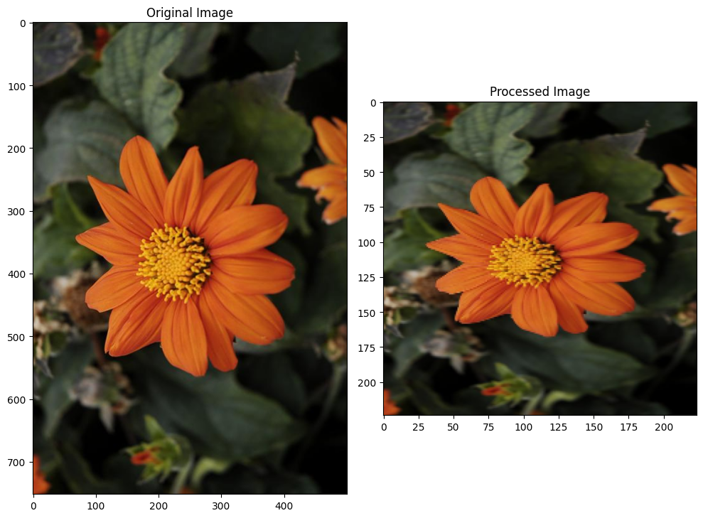
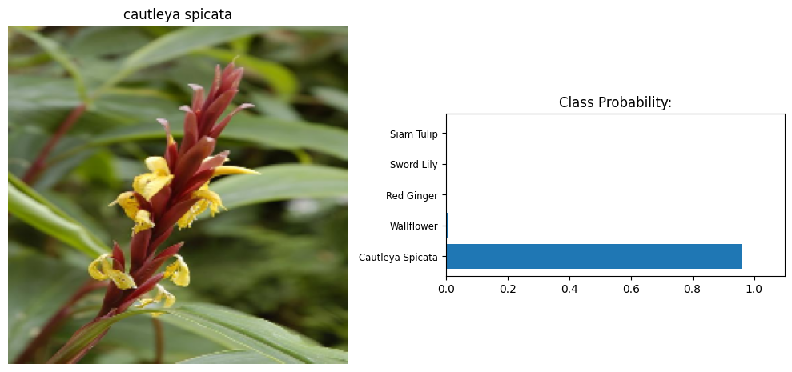

Going forward, AI algorithms will be incorporated into more and more everyday applications. For example, to include an image classifier in a smart phone app. That would be using a deep learning model trained on hundreds of thousands of images as part of the overall application architecture. A large part of software development in the future will be using these types of models as common parts of applications. In this project, an image classifier is trained to recognize different species of flowers. Using something like this in a phone app that tells the name of the flower the camera is looking at. Here, this classifier is trained, then exported for use in the application. The dataset used this dataset from Oxford of 102 flower categories it is one of the tensorflow datsets.
The project is broken down into multiple steps:
!pip install --upgrade tensorflow==2.14Collecting tensorflow==2.14
Downloading tensorflow-2.14.0-cp310-cp310-manylinux_2_17_x86_64.manylinux2014_x86_64.whl.metadata (4.1 kB)
Requirement already satisfied: absl-py>=1.0.0 in /opt/conda/lib/python3.10/site-packages (from tensorflow==2.14) (1.4.0)
Requirement already satisfied: astunparse>=1.6.0 in /opt/conda/lib/python3.10/site-packages (from tensorflow==2.14) (1.6.3)
Requirement already satisfied: flatbuffers>=23.5.26 in /opt/conda/lib/python3.10/site-packages (from tensorflow==2.14) (24.3.25)
Requirement already satisfied: gast!=0.5.0,!=0.5.1,!=0.5.2,>=0.2.1 in /opt/conda/lib/python3.10/site-packages (from tensorflow==2.14) (0.5.4)
Requirement already satisfied: google-pasta>=0.1.1 in /opt/conda/lib/python3.10/site-packages (from tensorflow==2.14) (0.2.0)
Requirement already satisfied: h5py>=2.9.0 in /opt/conda/lib/python3.10/site-packages (from tensorflow==2.14) (3.11.0)
Requirement already satisfied: libclang>=13.0.0 in /opt/conda/lib/python3.10/site-packages (from tensorflow==2.14) (18.1.1)
Collecting ml-dtypes==0.2.0 (from tensorflow==2.14)
Downloading ml_dtypes-0.2.0-cp310-cp310-manylinux_2_17_x86_64.manylinux2014_x86_64.whl.metadata (20 kB)
Requirement already satisfied: numpy>=1.23.5 in /opt/conda/lib/python3.10/site-packages (from tensorflow==2.14) (1.26.4)
Requirement already satisfied: opt-einsum>=2.3.2 in /opt/conda/lib/python3.10/site-packages (from tensorflow==2.14) (3.3.0)
Requirement already satisfied: packaging in /opt/conda/lib/python3.10/site-packages (from tensorflow==2.14) (21.3)
Requirement already satisfied: protobuf!=4.21.0,!=4.21.1,!=4.21.2,!=4.21.3,!=4.21.4,!=4.21.5,<5.0.0dev,>=3.20.3 in /opt/conda/lib/python3.10/site-packages (from tensorflow==2.14) (3.20.3)
Requirement already satisfied: setuptools in /opt/conda/lib/python3.10/site-packages (from tensorflow==2.14) (70.0.0)
Requirement already satisfied: six>=1.12.0 in /opt/conda/lib/python3.10/site-packages (from tensorflow==2.14) (1.16.0)
Requirement already satisfied: termcolor>=1.1.0 in /opt/conda/lib/python3.10/site-packages (from tensorflow==2.14) (2.4.0)
Requirement already satisfied: typing-extensions>=3.6.6 in /opt/conda/lib/python3.10/site-packages (from tensorflow==2.14) (4.12.2)
Collecting wrapt<1.15,>=1.11.0 (from tensorflow==2.14)
Downloading wrapt-1.14.1-cp310-cp310-manylinux_2_5_x86_64.manylinux1_x86_64.manylinux_2_17_x86_64.manylinux2014_x86_64.whl.metadata (6.7 kB)
Requirement already satisfied: tensorflow-io-gcs-filesystem>=0.23.1 in /opt/conda/lib/python3.10/site-packages (from tensorflow==2.14) (0.37.0)
Requirement already satisfied: grpcio<2.0,>=1.24.3 in /opt/conda/lib/python3.10/site-packages (from tensorflow==2.14) (1.62.2)
Collecting tensorboard<2.15,>=2.14 (from tensorflow==2.14)
Downloading tensorboard-2.14.1-py3-none-any.whl.metadata (1.7 kB)
Collecting tensorflow-estimator<2.15,>=2.14.0 (from tensorflow==2.14)
Downloading tensorflow_estimator-2.14.0-py2.py3-none-any.whl.metadata (1.3 kB)
Collecting keras<2.15,>=2.14.0 (from tensorflow==2.14)
Downloading keras-2.14.0-py3-none-any.whl.metadata (2.4 kB)
Requirement already satisfied: wheel<1.0,>=0.23.0 in /opt/conda/lib/python3.10/site-packages (from astunparse>=1.6.0->tensorflow==2.14) (0.43.0)
Requirement already satisfied: google-auth<3,>=1.6.3 in /opt/conda/lib/python3.10/site-packages (from tensorboard<2.15,>=2.14->tensorflow==2.14) (2.30.0)
Collecting google-auth-oauthlib<1.1,>=0.5 (from tensorboard<2.15,>=2.14->tensorflow==2.14)
Downloading google_auth_oauthlib-1.0.0-py2.py3-none-any.whl.metadata (2.7 kB)
Requirement already satisfied: markdown>=2.6.8 in /opt/conda/lib/python3.10/site-packages (from tensorboard<2.15,>=2.14->tensorflow==2.14) (3.6)
Requirement already satisfied: requests<3,>=2.21.0 in /opt/conda/lib/python3.10/site-packages (from tensorboard<2.15,>=2.14->tensorflow==2.14) (2.32.3)
Requirement already satisfied: tensorboard-data-server<0.8.0,>=0.7.0 in /opt/conda/lib/python3.10/site-packages (from tensorboard<2.15,>=2.14->tensorflow==2.14) (0.7.2)
Requirement already satisfied: werkzeug>=1.0.1 in /opt/conda/lib/python3.10/site-packages (from tensorboard<2.15,>=2.14->tensorflow==2.14) (3.1.3)
Requirement already satisfied: pyparsing!=3.0.5,>=2.0.2 in /opt/conda/lib/python3.10/site-packages (from packaging->tensorflow==2.14) (3.1.2)
Requirement already satisfied: cachetools<6.0,>=2.0.0 in /opt/conda/lib/python3.10/site-packages (from google-auth<3,>=1.6.3->tensorboard<2.15,>=2.14->tensorflow==2.14) (4.2.4)
Requirement already satisfied: pyasn1-modules>=0.2.1 in /opt/conda/lib/python3.10/site-packages (from google-auth<3,>=1.6.3->tensorboard<2.15,>=2.14->tensorflow==2.14) (0.4.0)
Requirement already satisfied: rsa<5,>=3.1.4 in /opt/conda/lib/python3.10/site-packages (from google-auth<3,>=1.6.3->tensorboard<2.15,>=2.14->tensorflow==2.14) (4.9)
Requirement already satisfied: requests-oauthlib>=0.7.0 in /opt/conda/lib/python3.10/site-packages (from google-auth-oauthlib<1.1,>=0.5->tensorboard<2.15,>=2.14->tensorflow==2.14) (2.0.0)
Requirement already satisfied: charset-normalizer<4,>=2 in /opt/conda/lib/python3.10/site-packages (from requests<3,>=2.21.0->tensorboard<2.15,>=2.14->tensorflow==2.14) (3.3.2)
Requirement already satisfied: idna<4,>=2.5 in /opt/conda/lib/python3.10/site-packages (from requests<3,>=2.21.0->tensorboard<2.15,>=2.14->tensorflow==2.14) (3.7)
Requirement already satisfied: urllib3<3,>=1.21.1 in /opt/conda/lib/python3.10/site-packages (from requests<3,>=2.21.0->tensorboard<2.15,>=2.14->tensorflow==2.14) (1.26.18)
Requirement already satisfied: certifi>=2017.4.17 in /opt/conda/lib/python3.10/site-packages (from requests<3,>=2.21.0->tensorboard<2.15,>=2.14->tensorflow==2.14) (2024.6.2)
Requirement already satisfied: MarkupSafe>=2.1.1 in /opt/conda/lib/python3.10/site-packages (from werkzeug>=1.0.1->tensorboard<2.15,>=2.14->tensorflow==2.14) (2.1.5)
Requirement already satisfied: pyasn1<0.7.0,>=0.4.6 in /opt/conda/lib/python3.10/site-packages (from pyasn1-modules>=0.2.1->google-auth<3,>=1.6.3->tensorboard<2.15,>=2.14->tensorflow==2.14) (0.6.0)
Requirement already satisfied: oauthlib>=3.0.0 in /opt/conda/lib/python3.10/site-packages (from requests-oauthlib>=0.7.0->google-auth-oauthlib<1.1,>=0.5->tensorboard<2.15,>=2.14->tensorflow==2.14) (3.2.2)
Downloading tensorflow-2.14.0-cp310-cp310-manylinux_2_17_x86_64.manylinux2014_x86_64.whl (489.8 MB)
━━━━━━━━━━━━━━━━━━━━━━━━━━━━━━━━━━━━━━━━ 489.8/489.8 MB 3.0 MB/s eta 0:00:00
l_dtypes-0.2.0-cp310-cp310-manylinux_2_17_x86_64.manylinux2014_x86_64.whl (1.0 MB)
━━━━━━━━━━━━━━━━━━━━━━━━━━━━━━━━━━━━━━━━ 1.0/1.0 MB 39.7 MB/s eta 0:00:00
━━━━━━━━━━━━━━━━━━━━━━━━━━━━━━━━━━━━━━━━ 1.7/1.7 MB 54.3 MB/s eta 0:00:00
━━━━━━━━━━━━━━━━━━━━━━━━━━━━━━━━━━━━━━━━ 5.5/5.5 MB 85.5 MB/s eta 0:00:00
ator-2.14.0-py2.py3-none-any.whl (440 kB)
━━━━━━━━━━━━━━━━━━━━━━━━━━━━━━━━━━━━━━━━ 440.7/440.7 kB 25.2 MB/s eta 0:00:00
anylinux_2_5_x86_64.manylinux1_x86_64.manylinux_2_17_x86_64.manylinux2014_x86_64.whl (77 kB)
━━━━━━━━━━━━━━━━━━━━━━━━━━━━━━━━━━━━━━━━ 77.9/77.9 kB 4.7 MB/s eta 0:00:00
ator, ml-dtypes, keras, google-auth-oauthlib, tensorboard, tensorflow
Attempting uninstall: wrapt
Found existing installation: wrapt 1.16.0
Uninstalling wrapt-1.16.0:
Successfully uninstalled wrapt-1.16.0
Attempting uninstall: tensorflow-estimator
Found existing installation: tensorflow-estimator 2.15.0
Uninstalling tensorflow-estimator-2.15.0:
Successfully uninstalled tensorflow-estimator-2.15.0
Attempting uninstall: ml-dtypes
Found existing installation: ml-dtypes 0.3.2
Uninstalling ml-dtypes-0.3.2:
Successfully uninstalled ml-dtypes-0.3.2
Attempting uninstall: keras
Found existing installation: keras 3.3.3
Uninstalling keras-3.3.3:
Successfully uninstalled keras-3.3.3
Attempting uninstall: google-auth-oauthlib
Found existing installation: google-auth-oauthlib 1.2.0
Uninstalling google-auth-oauthlib-1.2.0:
Successfully uninstalled google-auth-oauthlib-1.2.0
Attempting uninstall: tensorboard
Found existing installation: tensorboard 2.16.2
Uninstalling tensorboard-2.16.2:
Successfully uninstalled tensorboard-2.16.2
Attempting uninstall: tensorflow
Found existing installation: tensorflow 2.16.1
Uninstalling tensorflow-2.16.1:
Successfully uninstalled tensorflow-2.16.1
ERROR: pip's dependency resolver does not currently take into account all the packages that are installed. This behaviour is the source of the following dependency conflicts.
gcsfs 2024.9.0.post1 requires fsspec==2024.9.0, but you have fsspec 2024.6.0 which is incompatible.
s3fs 2024.9.0 requires fsspec==2024.9.0.*, but you have fsspec 2024.6.0 which is incompatible.
tensorflow-decision-forests 1.9.1 requires tensorflow~=2.16.1, but you have tensorflow 2.14.0 which is incompatible.
tensorflow-serving-api 2.16.1 requires tensorflow<3,>=2.16.1, but you have tensorflow 2.14.0 which is incompatible.
tensorflow-text 2.16.1 requires tensorflow<2.17,>=2.16.1; platform_machine != "arm64" or platform_system != "Darwin", but you have tensorflow 2.14.0 which is incompatible.
tensorstore 0.1.69 requires ml-dtypes>=0.3.1, but you have ml-dtypes 0.2.0 which is incompatible.
tf-keras 2.16.0 requires tensorflow<2.17,>=2.16, but you have tensorflow 2.14.0 which is incompatible.
Successfully installed google-auth-oauthlib-1.0.0 keras-2.14.0 ml-dtypes-0.2.0 tensorboard-2.14.1 tensorflow-2.14.0 tensorflow-estimator-2.14.0 wrapt-1.14.1
## Making all necessary imports.
import numpy as np
import pandas as pd
import tensorflow as tf
import tensorflow_hub as hub
import tensorflow_datasets as tfds
import matplotlib.pyplot as plt
import json
from PIL import Image
import os
from tensorflow.keras import layers
## tf used version
print(tf.__version__)2025-01-15 19:04:18.299655: E tensorflow/compiler/xla/stream_executor/cuda/cuda_dnn.cc:9342] Unable to register cuDNN factory: Attempting to register factory for plugin cuDNN when one has already been registered
2025-01-15 19:04:18.299726: E tensorflow/compiler/xla/stream_executor/cuda/cuda_fft.cc:609] Unable to register cuFFT factory: Attempting to register factory for plugin cuFFT when one has already been registered
2025-01-15 19:04:18.299796: E tensorflow/compiler/xla/stream_executor/cuda/cuda_blas.cc:1518] Unable to register cuBLAS factory: Attempting to register factory for plugin cuBLAS when one has already been registered
2.14.0
print("Num GPUs Available: ", len(tf.config.experimental.list_physical_devices('GPU')))
## there is an issue with compatabilty for tensorflow 2.16 I had to downgrade and downgrading caused inactivation of GPUs :(
Num GPUs Available: 0
Here the tensorflow_datasets are used to load the Oxford
Flowers 102 dataset. This dataset has 3 splits:
'train', 'test', and
'validation'. The training data is normalized and resized
to 224x224 pixels as required by the pre-trained networks. The
validation and testing sets are used to measure the model's performance
on data it hasn't seen yet, but they still need to be normalize and
resized the images to the appropriate size.
splits = ['test[:80%]', 'test[80%:]', 'train']I have used the test split here since it's much larger than the train, that would result in a better performance.
# Load the dataset with TensorFlow Datasets.
dataset, dateset_info = tfds.load('oxford_flowers102', split= splits, with_info= True, as_supervised=True)
# Create a training set, a validation set and a test set.
training_set, validation_set, test_set = dataset Downloading and preparing dataset 328.90 MiB (download: 328.90 MiB, generated: 331.34 MiB, total: 660.25 MiB) to /root/tensorflow_datasets/oxford_flowers102/2.1.1...
{"model_id":"314a9666784a4cd9999e3a5c52d84d07","version_major":2,"version_minor":0}{"model_id":"80b530b041e54c0aa9cdd7410d44238f","version_major":2,"version_minor":0}{"model_id":"e469038c7fee4be986b8262400ee1382","version_major":2,"version_minor":0}{"model_id":"de4b0ede7c9f42b1b8e09cfefc8a199c","version_major":2,"version_minor":0}{"model_id":"8b97841391734660806970ddecc2e5a1","version_major":2,"version_minor":0}{"model_id":"0dddf739c58a4fd58e1364cf94f34c22","version_major":2,"version_minor":0}{"model_id":"f6963ad837e34d1fba7a9cdd7673e018","version_major":2,"version_minor":0}{"model_id":"d9d7c06bf35342718d5be8dc5ae36b56","version_major":2,"version_minor":0}{"model_id":"6b1efc35b6544627a6fa11b992d136b7","version_major":2,"version_minor":0}{"model_id":"f071d62abfbb4476887d11532c498d37","version_major":2,"version_minor":0}Dataset oxford_flowers102 downloaded and prepared to /root/tensorflow_datasets/oxford_flowers102/2.1.1. Subsequent calls will reuse this data.
print(f'There are {len(training_set)} images in the training set')
print(f'There are {len(validation_set)} images in the validation set')
print(f'There are {len(test_set)} images in the test set')There are 4919 images in the training set
There are 1230 images in the validation set
There are 1020 images in the test set
dateset_infotfds.core.DatasetInfo(
name='oxford_flowers102',
full_name='oxford_flowers102/2.1.1',
description="""
The Oxford Flowers 102 dataset is a consistent of 102 flower categories commonly
occurring in the United Kingdom. Each class consists of between 40 and 258
images. The images have large scale, pose and light variations. In addition,
there are categories that have large variations within the category and several
very similar categories.
The dataset is divided into a training set, a validation set and a test set. The
training set and validation set each consist of 10 images per class (totalling
1020 images each). The test set consists of the remaining 6149 images (minimum
20 per class).
Note: The dataset by default comes with a test size larger than the train size.
For more info see this
[issue](https://github.com/tensorflow/datasets/issues/3022).
""",
homepage='https://www.robots.ox.ac.uk/~vgg/data/flowers/102/',
data_dir=PosixGPath('/tmp/tmpbuuwbpzotfds'),
file_format=tfrecord,
download_size=328.90 MiB,
dataset_size=331.34 MiB,
features=FeaturesDict({
'file_name': Text(shape=(), dtype=string),
'image': Image(shape=(None, None, 3), dtype=uint8),
'label': ClassLabel(shape=(), dtype=int64, num_classes=102),
}),
supervised_keys=('image', 'label'),
disable_shuffling=False,
splits={
'test': <SplitInfo num_examples=6149, num_shards=2>,
'train': <SplitInfo num_examples=1020, num_shards=1>,
'validation': <SplitInfo num_examples=1020, num_shards=1>,
},
citation="""@InProceedings{Nilsback08,
author = "Nilsback, M-E. and Zisserman, A.",
title = "Automated Flower Classification over a Large Number of Classes",
booktitle = "Proceedings of the Indian Conference on Computer Vision, Graphics and Image Processing",
year = "2008",
month = "Dec"
}""",
)## Get the number of examples in each set from the dataset info.
classes = dateset_info.features['label'].num_classes
print("The number of classes in this dataset is: ", classes)
## Get the number of classes in the dataset from the dataset info.
examples = dateset_info.splits['train'].num_examples
print("The number of examples in the train set is: ", examples)
examples = dateset_info.splits['train'].num_examples
print("The number of examples in the validation set is: ", examples)
examples_test = dateset_info.splits['test'].num_examples
print("The number of examples in the test set is: ", examples_test)The number of classes in this dataset is: 102
The number of examples in the train set is: 1020
The number of examples in the validation set is: 1020
The number of examples in the test set is: 6149
## Checking how the elemnt structure is in this dataset
for element in training_set.take(1):
print(element)(<tf.Tensor: shape=(542, 500, 3), dtype=uint8, numpy=
array([[[ 10, 17, 9],
[ 10, 17, 9],
[ 10, 17, 9],
...,
[ 14, 15, 9],
[ 14, 15, 9],
[ 14, 15, 9]],
[[ 10, 17, 9],
[ 10, 17, 9],
[ 10, 17, 9],
...,
[ 15, 16, 10],
[ 15, 16, 10],
[ 15, 16, 10]],
[[ 10, 17, 9],
[ 10, 17, 9],
[ 10, 17, 9],
...,
[ 15, 16, 11],
[ 15, 16, 11],
[ 15, 16, 11]],
...,
[[ 56, 69, 25],
[ 55, 66, 23],
[ 55, 64, 19],
...,
[107, 144, 12],
[133, 170, 39],
[160, 197, 65]],
[[ 62, 69, 28],
[ 59, 66, 25],
[ 56, 61, 21],
...,
[110, 145, 15],
[137, 172, 44],
[164, 199, 69]],
[[ 65, 69, 32],
[ 62, 66, 29],
[ 59, 59, 23],
...,
[111, 146, 18],
[139, 174, 46],
[167, 202, 74]]], dtype=uint8)>, <tf.Tensor: shape=(), dtype=int64, numpy=40>)
## Print the shape and corresponding label of 3 images in the training set.
for element in training_set.take(3):
image = element[0]
label = element[1]
print("The images in our dataset have: ")
print("Datatype: ", image.dtype)
print("Shape: ", image.shape)
print("The labels in our dataset have: ")
print("Datatype: ", label.dtype)The images in our dataset have:
Datatype: <dtype: 'uint8'>
Shape: (542, 500, 3)
The labels in our dataset have:
Datatype: <dtype: 'int64'>
The images in our dataset have:
Datatype: <dtype: 'uint8'>
Shape: (748, 500, 3)
The labels in our dataset have:
Datatype: <dtype: 'int64'>
The images in our dataset have:
Datatype: <dtype: 'uint8'>
Shape: (500, 600, 3)
The labels in our dataset have:
Datatype: <dtype: 'int64'>
It is noticed that the images don't have the same sizes.
# Plot 1 image from the training set. Set the title
for element in training_set.take(3):
image = element[0].numpy().squeeze() ## remove dimension
label = element[1].numpy()
plt.imshow(image, cmap = plt.cm.binary)
plt.title(label)
plt.colorbar()
plt.show()
# of the plot to the corresponding image label.
print("The label of this image is: ", label)The label of this image is: 42
You'll also need to load in a mapping from label to category name.
You can find this in the file label_map.json. It's a JSON
object which you can read in with the json
module. This will give you a dictionary mapping the integer coded
labels to the actual names of the flowers.
## since I'm working on kaggle teh file name is diffrent than the udacity workplace
with open('/kaggle/input/pytorch-challange-flower-dataset/cat_to_name.json', 'r') as f:
class_names = json.load(f)
print(class_names){'21': 'fire lily', '3': 'canterbury bells', '45': 'bolero deep blue', '1': 'pink primrose', '34': 'mexican aster', '27': 'prince of wales feathers', '7': 'moon orchid', '16': 'globe-flower', '25': 'grape hyacinth', '26': 'corn poppy', '79': 'toad lily', '39': 'siam tulip', '24': 'red ginger', '67': 'spring crocus', '35': 'alpine sea holly', '32': 'garden phlox', '10': 'globe thistle', '6': 'tiger lily', '93': 'ball moss', '33': 'love in the mist', '9': 'monkshood', '102': 'blackberry lily', '14': 'spear thistle', '19': 'balloon flower', '100': 'blanket flower', '13': 'king protea', '49': 'oxeye daisy', '15': 'yellow iris', '61': 'cautleya spicata', '31': 'carnation', '64': 'silverbush', '68': 'bearded iris', '63': 'black-eyed susan', '69': 'windflower', '62': 'japanese anemone', '20': 'giant white arum lily', '38': 'great masterwort', '4': 'sweet pea', '86': 'tree mallow', '101': 'trumpet creeper', '42': 'daffodil', '22': 'pincushion flower', '2': 'hard-leaved pocket orchid', '54': 'sunflower', '66': 'osteospermum', '70': 'tree poppy', '85': 'desert-rose', '99': 'bromelia', '87': 'magnolia', '5': 'english marigold', '92': 'bee balm', '28': 'stemless gentian', '97': 'mallow', '57': 'gaura', '40': 'lenten rose', '47': 'marigold', '59': 'orange dahlia', '48': 'buttercup', '55': 'pelargonium', '36': 'ruby-lipped cattleya', '91': 'hippeastrum', '29': 'artichoke', '71': 'gazania', '90': 'canna lily', '18': 'peruvian lily', '98': 'mexican petunia', '8': 'bird of paradise', '30': 'sweet william', '17': 'purple coneflower', '52': 'wild pansy', '84': 'columbine', '12': "colt's foot", '11': 'snapdragon', '96': 'camellia', '23': 'fritillary', '50': 'common dandelion', '44': 'poinsettia', '53': 'primula', '72': 'azalea', '65': 'californian poppy', '80': 'anthurium', '76': 'morning glory', '37': 'cape flower', '56': 'bishop of llandaff', '60': 'pink-yellow dahlia', '82': 'clematis', '58': 'geranium', '75': 'thorn apple', '41': 'barbeton daisy', '95': 'bougainvillea', '43': 'sword lily', '83': 'hibiscus', '78': 'lotus lotus', '88': 'cyclamen', '94': 'foxglove', '81': 'frangipani', '74': 'rose', '89': 'watercress', '73': 'water lily', '46': 'wallflower', '77': 'passion flower', '51': 'petunia'}
# Plot 1 image from the training set. Set the title
for element in training_set.take(1):
image = element[0].numpy().squeeze() ## remove dimension
label = element[1].numpy()
plt.imshow(image, cmap = plt.cm.binary)
plt.title(class_names[str(label)])
plt.colorbar()
plt.show()
# of the plot to the corresponding class name.
print("The label of this image is: ", class_names[str(label)])The label of this image is: lenten rose
BATCH_SIZE = 64
IMAGE_SHAPE = (224, 224)def preprocessing(image, label):
"""
Args:
- image
- label
Returns:
Normalized image and label
"""
image = tf.image.resize(image, IMAGE_SHAPE)
image = tf.cast(image, tf.float32)
image /= 255
return image, label# Create a pipeline for each set.
training_batches = training_set.map(preprocessing).cache().shuffle(examples//4).batch(BATCH_SIZE).prefetch(1)
validation_batches = validation_set.map(preprocessing).cache().batch(BATCH_SIZE).prefetch(1)
test_batches = test_set.map(preprocessing).cache().batch(BATCH_SIZE).prefetch(1)for image_batch, label_batch in training_batches.take(1):
print("Images in each batch have: ")
print("datatype: ", image_batch.dtype)
print("shape: ", image_batch.shape )
print('There are a total of {} image labels in this batch: '.format(label_batch.numpy().size))
print(label_batch.numpy())Images in each batch have:
datatype: <dtype: 'float32'>
shape: (64, 224, 224, 3)
There are a total of 64 image labels in this batch:
[52 91 65 30 75 5 56 42 81 72 87 63 49 51 76 69 73 40 18 10 17 42 72 50
77 46 31 50 84 23 2 88 75 91 63 89 65 88 81 79 87 37 39 81 51 49 72 40
28 88 47 76 50 66 46 51 45 80 82 74 71 29 42 1]
Let's plot the normalized image and see how it looks like
for image_batch, label_batch in training_batches.take(1):
images = image_batch.numpy().squeeze()
labels = label_batch.numpy()
## plotting the image
plt.imshow(images[0], cmap = plt.cm.binary)
plt.colorbar()
plt.title(class_names[str(labels[0])])
plt.show()Now that the data is ready, it's time to build and train the classifier. Using the MobileNet pre-trained model from TensorFlow Hub to get the image features. Then a new feed-forward classifier using those features is build and trained.
Things done in this section:
EPOCHS = 10url = "https://tfhub.dev/google/tf2-preview/mobilenet_v2/feature_vector/4"
feature_extractor = hub.KerasLayer(url, input_shape=(224, 224, 3))
feature_extractor.trainable = Falsemodel = tf.keras.Sequential([feature_extractor,
tf.keras.layers.Dense(classes, activation='softmax')])
model.summary()Model: "sequential"
_________________________________________________________________
Layer (type) Output Shape Param #
=================================================================
keras_layer (KerasLayer) (None, 1280) 2257984
dense (Dense) (None, 102) 130662
=================================================================
Total params: 2388646 (9.11 MB)
Trainable params: 130662 (510.40 KB)
Non-trainable params: 2257984 (8.61 MB)
_________________________________________________________________
When training make sure you're updating only the weights of the feed-forward network. You should be able to get the validation accuracy above 70% if you build everything right.
model.compile(optimizer = 'Adam',
loss= 'sparse_categorical_crossentropy',
metrics = ['accuracy'])# Save the Model with the lowest validation loss and use early stopping
early_stopping = tf.keras.callbacks.EarlyStopping(monitor='val_loss', patience= 5)
save_best = tf.keras.callbacks.ModelCheckpoint('./best_model.h5',
monitor='val_loss',
save_best_only=True)### Train the model
history = model.fit(training_batches,
epochs = EPOCHS,
validation_data = validation_batches,
callbacks = [early_stopping, save_best])Epoch 1/10
77/77 [==============================] - 135s 2s/step - loss: 2.5724 - accuracy: 0.4637 - val_loss: 1.3913 - val_accuracy: 0.7081
Epoch 2/10
/opt/conda/lib/python3.10/site-packages/keras/src/engine/training.py:3079: UserWarning: You are saving your model as an HDF5 file via `model.save()`. This file format is considered legacy. We recommend using instead the native Keras format, e.g. `model.save('my_model.keras')`.
saving_api.save_model(
77/77 [==============================] - 139s 2s/step - loss: 0.8885 - accuracy: 0.8443 - val_loss: 0.8602 - val_accuracy: 0.8220
Epoch 3/10
77/77 [==============================] - 121s 2s/step - loss: 0.5165 - accuracy: 0.9203 - val_loss: 0.6744 - val_accuracy: 0.8512
Epoch 4/10
77/77 [==============================] - 122s 2s/step - loss: 0.3585 - accuracy: 0.9500 - val_loss: 0.5738 - val_accuracy: 0.8748
Epoch 5/10
77/77 [==============================] - 126s 2s/step - loss: 0.2650 - accuracy: 0.9669 - val_loss: 0.5191 - val_accuracy: 0.8821
Epoch 6/10
77/77 [==============================] - 124s 2s/step - loss: 0.2055 - accuracy: 0.9766 - val_loss: 0.4799 - val_accuracy: 0.8870
Epoch 7/10
77/77 [==============================] - 124s 2s/step - loss: 0.1628 - accuracy: 0.9852 - val_loss: 0.4514 - val_accuracy: 0.8951
Epoch 8/10
77/77 [==============================] - 123s 2s/step - loss: 0.1327 - accuracy: 0.9906 - val_loss: 0.4294 - val_accuracy: 0.9000
Epoch 9/10
77/77 [==============================] - 123s 2s/step - loss: 0.1100 - accuracy: 0.9945 - val_loss: 0.4099 - val_accuracy: 0.9081
Epoch 10/10
77/77 [==============================] - 125s 2s/step - loss: 0.0928 - accuracy: 0.9967 - val_loss: 0.4001 - val_accuracy: 0.9008
# Plot the loss and accuracy values achieved during training for the training and validation set.
training_accuracy = history.history['accuracy']
validation_accuracy = history.history['val_accuracy']
training_loss = history.history['loss']
validation_loss = history.history['val_loss']
epochs_range = range(len(history.history['val_loss']))
fig, (ax1, ax2) = plt.subplots(1, 2, figsize=(10, 6))
ax1.plot(epochs_range, training_accuracy, label='Training Accuracy')
ax1.plot(epochs_range, validation_accuracy, label='Validation Accuracy')
ax1.legend(loc='lower right')
ax1.set_title('Training and Validation Accuracy')
ax2.plot(epochs_range, training_loss, label='Training Loss')
ax2.plot(epochs_range, validation_loss, label='Validation Loss')
ax2.legend(loc='lower right')
ax2.set_title('Training and Validation Loss')
# Show the plot
plt.show()It's good practice to test your trained network on test data, images the network has never seen either in training or validation. This will give you a good estimate for the model's performance on completely new images. You should be able to reach around 70% accuracy on the test set if the model has been trained well.
# Print the loss and accuracy values achieved on the entire test set.
loss, accuracy = model.evaluate(test_batches)
print("Loss on testing set: ", loss)
print("Accuracy on testing set: ", accuracy)16/16 [==============================] - 22s 1s/step - loss: 0.5423 - accuracy: 0.8559
Loss on testing set: 0.5423067212104797
Accuracy on testing set: 0.8558823466300964
Now that your network is trained, save the model so you can load it later for making inference. In the cell below save your model as a Keras model (i.e. save it as an HDF5 file).
# Save your trained model as a Keras model.
model.save('test_model.keras') ## I'll be using the best_model though wrote this line as requiredLoad the Keras model you saved above.
## Load the Keras model
reloaded_model = tf.keras.models.load_model('best_model.h5', custom_objects = {'KerasLayer':hub.KerasLayer})
reloaded_model.summary()Model: "sequential"
_________________________________________________________________
Layer (type) Output Shape Param #
=================================================================
keras_layer (KerasLayer) (None, 1280) 2257984
dense (Dense) (None, 102) 130662
=================================================================
Total params: 2388646 (9.11 MB)
Trainable params: 130662 (510.40 KB)
Non-trainable params: 2257984 (8.61 MB)
_________________________________________________________________
# Print the loss and accuracy values achieved on the entire test set for best model
loss, accuracy = reloaded_model.evaluate(test_batches)
print("Loss on testing set: ", loss)
print("Accuracy on testing set: ", accuracy)16/16 [==============================] - 22s 1s/step - loss: 0.5423 - accuracy: 0.8559
Loss on testing set: 0.5423067212104797
Accuracy on testing set: 0.8558823466300964
# Create the process_image function
def process_image(image_path):
"""
Args:
- image_path
Returns:
- Preprocessed image
"""
image = Image.open(image_path)
image = np.asarray(image)
image = tf.image.resize(image, IMAGE_SHAPE)
image = tf.cast(image, tf.float32)
image /= 255
return imageTo check your process_image function 4 images are
provided in the /kaggle/input/test-images folder:
test_images = "/kaggle/input/test-images" ## I added a kaggle dataset as a test images included in the project workplace
for test_image_path in os.listdir(test_images):
fig, (ax1, ax2) = plt.subplots(figsize=(10,10), ncols=2)
test_image = Image.open(os.path.join(test_images, test_image_path))
test_image = np.asarray(test_image)
ax1.imshow(test_image)
ax1.set_title('Original Image')
processed_test_image = process_image(os.path.join(test_images, test_image_path))
ax2.imshow(processed_test_image)
ax2.set_title('Processed Image')
plt.tight_layout()
plt.show()
Now that the images are in the correct format, it's time to write the
predict function for making inference with our model.
# Create the predict function
def predict(image_path, model, top_k):
"""
Args:
- image_path
- model
- top_k
Returns:
returns the top $K$ most likely class labels along with the probabilities.
"""
processed_image = process_image(image_path)
expanded_image = np.expand_dims(processed_image, axis=0)
model_prediction = model.predict(expanded_image)
top_k_probs, top_k_classes = tf.nn.top_k(model_prediction, k=top_k)
top_k_probs = list(top_k_probs.numpy()[0])
top_k_classes = list(top_k_classes.numpy()[0])
return top_k_probs, top_k_classes, processed_image It's always good to check the predictions made by the model to make
sure they are correct. 4 images in the ./test_images/
folder are checked:
def plot_prop(test_image_path, processed_image, top_k_class_names, top_k_probs):
"""
Plots class probabilty with class names.
Args:
- ps
- first_image
Returns:
"""
fig, (ax1, ax2) = plt.subplots(figsize=(10,10), ncols=2)
ax1.imshow(processed_image)
ax1.axis('off')
ax1.set_title((os.path.basename(test_image_path)).replace('_', ' ').replace(".jpg", ""))
ax2.barh(np.arange(5), top_k_probs)
ax2.set_aspect(0.1)
ax2.set_yticks(np.arange(5))
ax2.set_yticklabels(top_k_class_names, size='small')
ax2.set_title('Class Probability:')
ax2.set_xlim(0, 1.1)
plt.tight_layout()In the cell below use matplotlib to plot the input image
alongside the probabilities for the top 5 classes predicted by your
model. Plot the probabilities as a bar graph. The plot should look like
this: You can convert from the class integer labels to actual flower
names using class_names.
for test_image_path in os.listdir(test_images):
test_image = Image.open(os.path.join(test_images, test_image_path))
top_k_probs, top_k_classes, processed_image = predict(os.path.join(test_images, test_image_path), reloaded_model, 5)
top_k_class_names = []
for lable in top_k_classes:
top_k_class_names.append(class_names[str(lable+1)].title())
plot_prop(test_image_path, processed_image, top_k_class_names, top_k_probs)1/1 [==============================] - 1s 724ms/step
1/1 [==============================] - 0s 39ms/step
1/1 [==============================] - 0s 40ms/step
1/1 [==============================] - 0s 39ms/step
